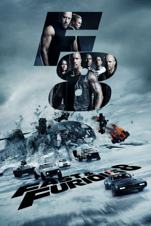

#6811 Fast and Furious 8
Alternativ: The Fate of the Furious
 
 IMDB-Wertung: 6.7 / 10
IMDB-Wertung: 6.7 / 10  Metascore: 56
Metascore: 56 
Gibt es endlich ein normales Leben für Dom und seine Freunde, die er Familie nennt? Nach dem Rückzug von Brian und Mia hat er sich mit Letty in die Flitterwochen verabschiedet und die restliche Crew ist von allen Vergehen aus der Vergangenheit freigesprochen worden. Doch dann taucht die mysteriöse Cyber-Terroristin Cipher auf, verführt Dom und macht ihn zu ihrem Partner bei einer Reihe von Verbrechen. Mr. Nobody bittet daher die Gang um Letty, Roman, Tej und Co., zu helfen. Gemeinsam mit dem wegen Doms Verrat zwischenzeitlich im Knast gelandeten Hobbs und sogar ihrem Todfeind Deckard Shaw müssen sie in den unterschiedlichsten Winkeln der Welt eine Anarchistin stoppen, die Chaos in die Welt bringen will. Und wichtiger: Sie müssen den Mann nach Hause holen, der sie zu einer Familie machte…
Jahr: 2017
Dauer: 135 Minuten
FSK: 12
Land: China Studio: UPITonspuren: DTS - ,
Untertitel: Deutsch, Englisch,
Auflösung: 1080p (1920x808) Größe: 8110 MB
Genre: Action, Thriller, Abenteuer, Krimi
Regisseur: F. Gary Gray
Drehbuch: Chris Morgan
Soundtrack:
Darsteller:
 Vin Diesel als Dom
Vin Diesel als Dom Jason Statham als Deckard
Jason Statham als Deckard Dwayne Johnson als Hobbs
Dwayne Johnson als Hobbs Michelle Rodriguez als Letty
Michelle Rodriguez als Letty Tyrese Gibson als Roman
Tyrese Gibson als Roman Ludacris als Tej Parker
Ludacris als Tej Parker Charlize Theron als Cipher
Charlize Theron als Cipher Kurt Russell als Mr. Nobody
Kurt Russell als Mr. Nobody Nathalie Emmanuel als Ramsey
Nathalie Emmanuel als Ramsey Luke Evans als Owen
Luke Evans als Owen Elsa Pataky als Elena
Elsa Pataky als Elena Kristofer Hivju als Rhodes
Kristofer Hivju als Rhodes Scott Eastwood als Little Nobody
Scott Eastwood als Little Nobody Patrick St. Esprit als DS Allan
Patrick St. Esprit als DS Allan- Janmarco Santiago als Fernando
 Luke Hawx als Miller
Luke Hawx als Miller- Corey Maher als Tac Team Leader
 Olek Krupa als Russian Minister of Defense
Olek Krupa als Russian Minister of Defense- Alexander Babara als Russian Aide
- Robert Jekabson als Russian MMV Driver
- Nick Gracer als Russian MMV Soldier
- Eden Estrella als Sam
 Gary Weeks als Super Jet Pilot
Gary Weeks als Super Jet Pilot Matthew Cornwell als Super Jet Tech
Matthew Cornwell als Super Jet Tech- Jeremy Anderson als Lead Guard
- Tego Calderon als Leo
- Don Omar als Santos
- Peter Hansen als God's Eye Tech
- Friday Chamberlain als Zombie Car Tech
- Celestino Cornielle als Raldo
- Rex Alba als Businessman , uncredited
- Chris Angerman als NYC Coffee Shop Patron , uncredited
 Georin Aquila als Businessman , uncredited
Georin Aquila als Businessman , uncredited- Bryan Bachman als Special Military Operative , uncredited
- Kenny Barr als Russian Solider , uncredited
- Joiel Bauschatz als Pedestrian , uncredited
- Melissa Rae Bender als NYC Pedestrian / College Student , uncredited
 Anita Farmer Bergman als Businesswoman , uncredited
Anita Farmer Bergman als Businesswoman , uncredited Patrick Constantine Bertagnolli Jr. als SWAT Member , uncredited
Patrick Constantine Bertagnolli Jr. als SWAT Member , uncredited- Jay J. Bidwell als Tourist , uncredited
- Brian Wolfman Black Bowman als Business Pedestrain , uncredited
- Taurus Bunkley als Mechanic , uncredited
- Rhonda Burnette als Cuba Race Pedestrian , uncredited
 Marko Caka als Operative , uncredited
Marko Caka als Operative , uncredited- Toshi Calderón als College Student , uncredited
- Tony Carbajal als Henchman #2 , uncredited
- Felix Chu als Fish Warehouse Worker , uncredited
- Theresa Cook als Businesswoman , uncredited
- Roy Coulter als Prison Guard , uncredited
- Clint Crane als Special Military Operative , uncredited
Datei: X:\7+mehr(A-Z)\Fast and Furious\Fast and Furious 8 (2017, FSK12, 1920x808).mkv seit 30.08.2017
Festplatte: HD Collection-7+mehr(A-Z)+Person
 Es gibt insgesamt 13 Filme in der Gruppe '7+mehr(A-Z)\Fast and Furious'
Es gibt insgesamt 13 Filme in der Gruppe '7+mehr(A-Z)\Fast and Furious'